|
4-2-3-1
|
Germany | 2 | - | 1 | Côte d'Ivoire |
4-1-4-1
|
| HT 0-1 | ||||||
|
FIFA World CupSaturday 20 June 2026
|
||||||
- Venue
- Toronto Stadium
- Attendance
- 43,036
- Referee
- Juan Gabriel Benítez Mareco
Substitution46'
N. Schlotterbeck
A. Rüdiger
- 3
Substitution60'
L. Sané
J. Leweling
J. Musiala
D. Undav
A. Pavlović
N. Amiri
Goal68'
D. Undav
Assist: N. Amiri
Substitution85'
K. Havertz
L. Goretzka
Goal90+4'
D. Undav
Assist: F. Nmecha
Whistle45+8'
45+8'
Goal30'
F. Kessie
- 3
Substitution75'
A. Bonny
E. Guessand
I. Sangaré
S. Fofana
A. Diallo
S. Adingra
Substitution82'
W. Singo
G. Doué
Substitution85'
Y. Diomande
N. Pépé
Germany | |
|---|---|
Goalkeeper | |
| 1 | M. Neuer |
Defender | |
| 4 | J. Tah |
| 6 | J. Kimmich |
| 15 | N. Schlotterbeck 46' |
| 18 | N. Brown |
Midfielder | |
| 5 | A. Pavlović 60' |
| 10 | J. Musiala 60' |
| 17 | F. Wirtz |
| 19 | L. Sané 60' |
| 23 | F. Nmecha |
Forward | |
| 7 | K. Havertz 85' |
Substitutes | |
| 2 | A. Rüdiger 46' |
| 8 | L. Goretzka 85' |
| 9 | J. Leweling 60' |
| 20 | N. Amiri 60' |
| 26 | D. Undav 60'68'90+4' |
Côte d'Ivoire | |
Goalkeeper | |
| 1 | Y. Fofana |
Defender | |
| 3 | G. Konan |
| 5 | W. Singo 82' |
| 7 | O. Kossounou |
| 20 | E. Agbadou |
Midfielder | |
| 8 | F. Kessie 30' |
| 11 | Y. Diomande 85' |
| 15 | A. Diallo 75' |
| 18 | I. Sangaré 75' |
| 26 | C. Inao Oulaï |
Forward | |
| 9 | A. Bonny 75' |
Substitutes | |
| 6 | S. Fofana 75' |
| 10 | S. Adingra 75' |
| 17 | G. Doué 82' |
| 19 | N. Pépé 85' |
| 22 | E. Guessand 75' |


99'
Germany have won their last 3 games in the FIFA World Cup, their last longer winning streak was from 26th June 2014 to 13th July 2014, a run of 5 games.
99'
Germany have won after trailing at half time in the FIFA World Cup for the first time since 23rd June 2018 against Sweden.
99'
Côte d'Ivoire attempted 9 shots in this game, their lowest total in a single match in the 2026 FIFA World Cup.
99'
Germany attempted 16 shots in this game, their lowest total in a single match in the 2026 FIFA World Cup.
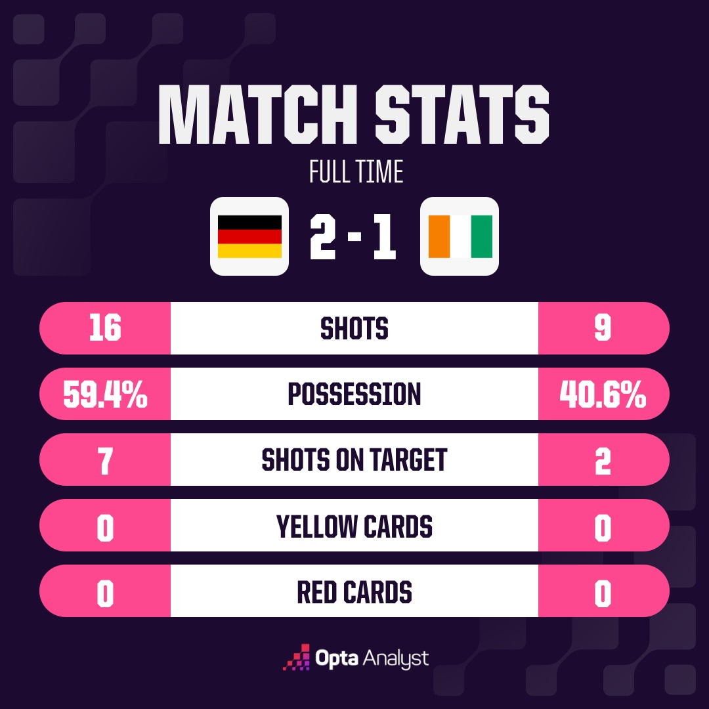
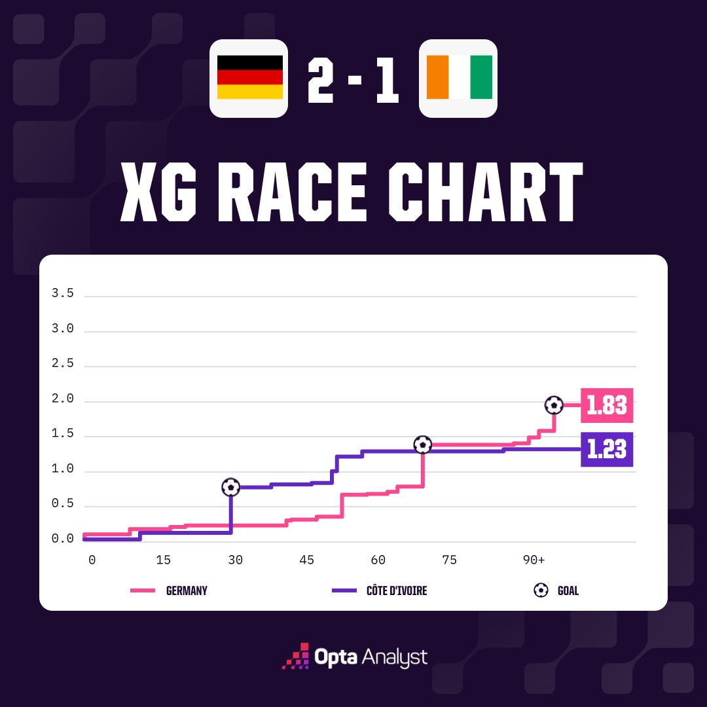
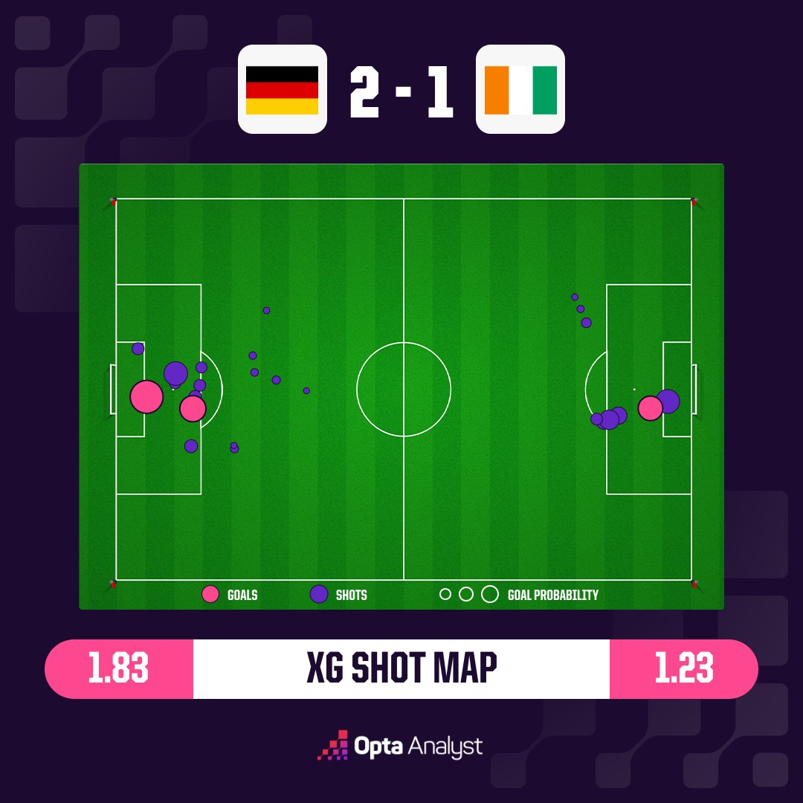
90+8'
Germany WIN! It’s all over at Toronto Stadium, with Germany coming out on top 2-1 over Côte d'Ivoire, thanks to goal from Deniz Undav.
90+4'
Deniz Undav has scored his third goal of the 2025 FIFA World Cup this edition, more than any other Germany player.
90+4'
Felix Nmecha has assisted his first goal in the 2026 FIFA World Cup.
90+4'
GOAL! Germany have gone ahead late on, with Deniz Undav finishing from inside the area. Can they hold on now? They only have the closing stages to get through to come out with the victory.
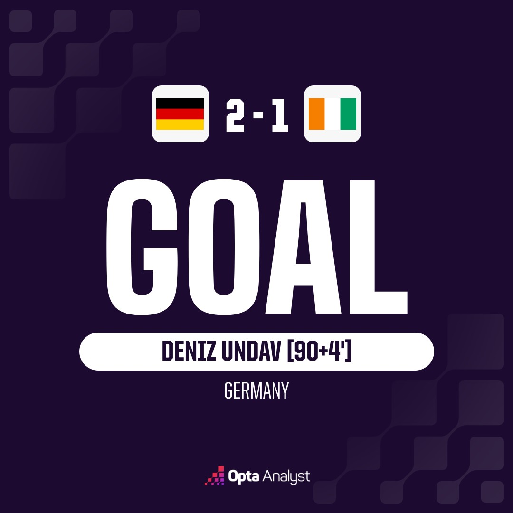
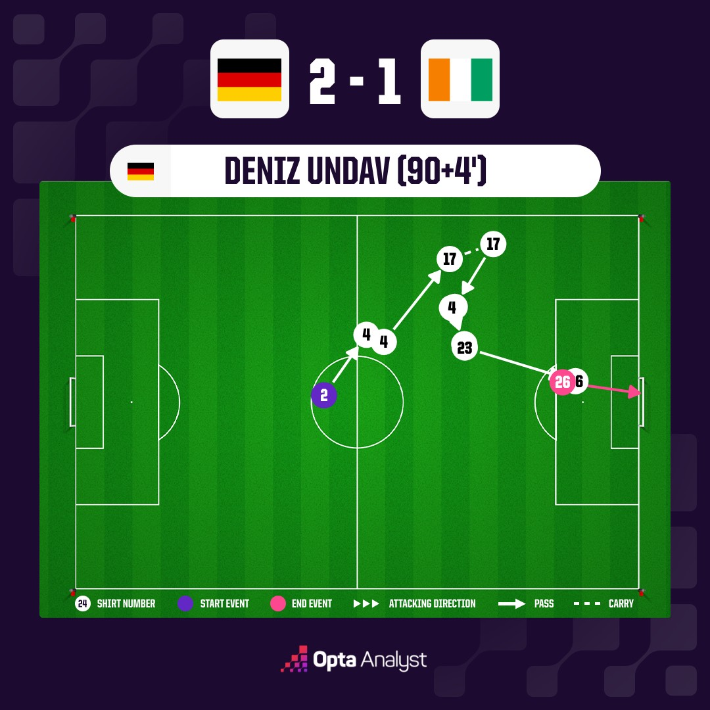
90+3'
A free-kick to Germany, as Guéla Doué goes in and fouls Florian Wirtz. However, Côte d'Ivoire will not mind giving one away in this area too much, with plenty of distance to their goal.
90+1'
Yahia Fofana has made 5 saves, his highest total in a single match in the FIFA World Cup.
90+1'
SAVED! Good work from Yahia Fofana, who stands firm to deny Nadiem Amiri, who managed to get a shot away from inside the Côte d'Ivoire area.
89'
SHOT! Nathaniel Brown manages to get a shot off from inside the area, but although it was heading in, they cannot get enough on it to beat Yahia Fofana, who makes the save.
87'
Evann Guessand goes in on Felix Nmecha and concedes a foul. The free-kick is not in a particularly dangerous area from Côte d'Ivoire’s viewpoint, though.
86'
That was hopeful! A bit of a punt from Deniz Undav, who goes for goal from distance, but Yahia Fofana makes the save.
86'
There is plenty of possession for Côte d'Ivoire, with 65.52% compared to Germany 34.48% in the last 15 minutes. However, Côte d'Ivoire have not been able to turn that dominance of the ball into a goal.
85'
Germany are making a tactical change. Kai Havertz is leaving the field and in their place comes Leon Goretzka – we will soon see if this switch has the desired impact.
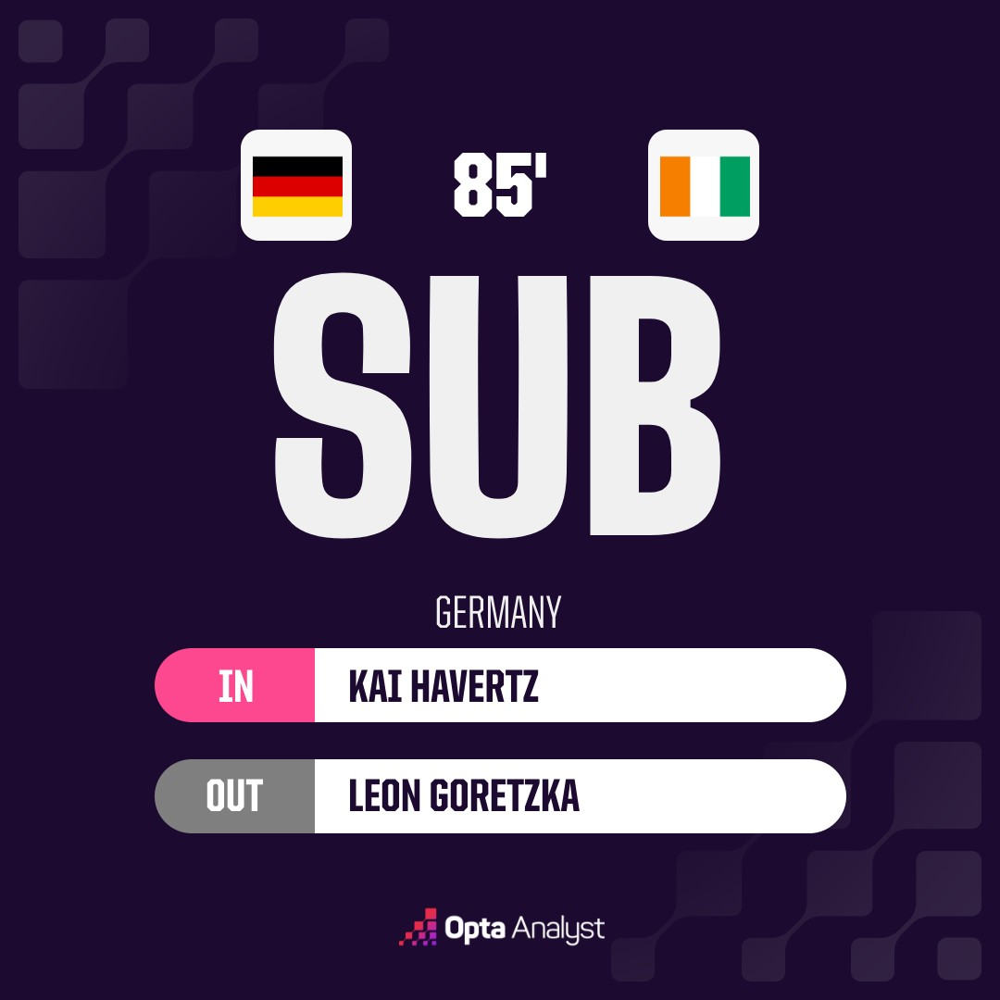
85'
Côte d'Ivoire are making a tactical change. Yan Diomande is leaving the field and in their place comes Nicolas Pépé – we will soon see if this switch has the desired impact.
84'
BLOCKED! That was close. Seko Fofana got off a shot, which was heading in, but Antonio Rüdiger was on hand to make a vital intervention. Great block!
83'
Can Germany survive here? They will have some defending to do after the ball is turned behind for a corner kick. Will Côte d'Ivoire take this opportunity and grab the goal they have been pushing for?
82'
A change for Côte d'Ivoire, as they are forced into a substitution with Wilfried Singo having sustained an injury. Guéla Doué is coming on for Côte d'Ivoire now.
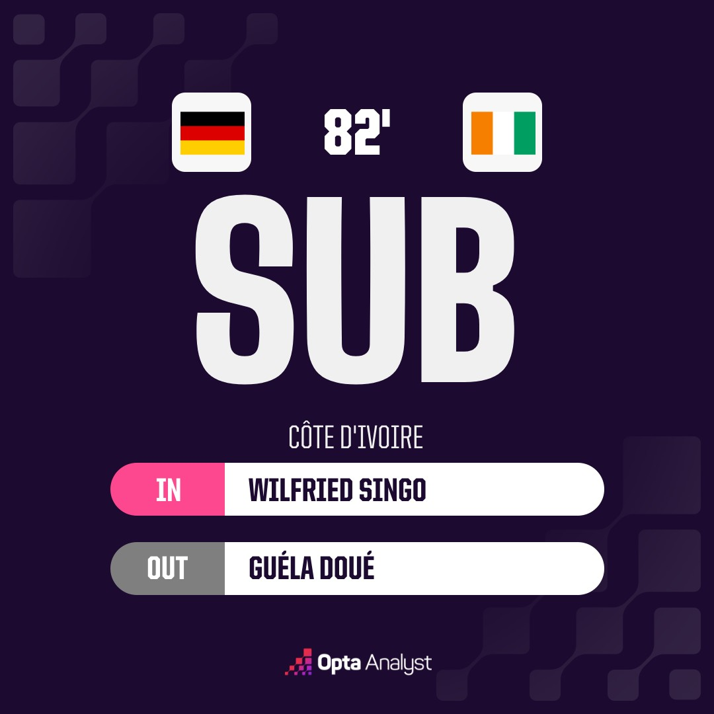
82'
Foul! A free-kick now in a dangerous area for Côte d'Ivoire, after Yan Diomande is fouled by Florian Wirtz. Can Côte d'Ivoire make the most of this opportunity?
79'
A rash challenge from Felix Nmecha, who sends Christ Inao Oulaï tumbling, giving Côte d'Ivoire a free-kick. It is not in a threatening position, but it gives them a chance to get back on the ball.
79'
Cautious stuff from Côte d'Ivoire as we enter the business end. Another measured passing move as both teams seem content with a point at this stage.
78'
No goalmouth action for some time now, with neither team having had a shot in the past 10 minutes. Will there be a moment that changes things soon? Germany have seen plenty of the ball, however, with 60 per cent of the possession in their favour during that period.
76'
Germany have had more of the ball with 75 minutes played, with 62.10% possession compared to Côte d'Ivoire’s 37.90%. That is not likely to change too much in the final 15 minutes.
75'
A substitution for Côte d'Ivoire sees Amad Diallo replaced by Simon Adingra. There does not appear to be any obvious sign of an injury, so that is a tactical switch.
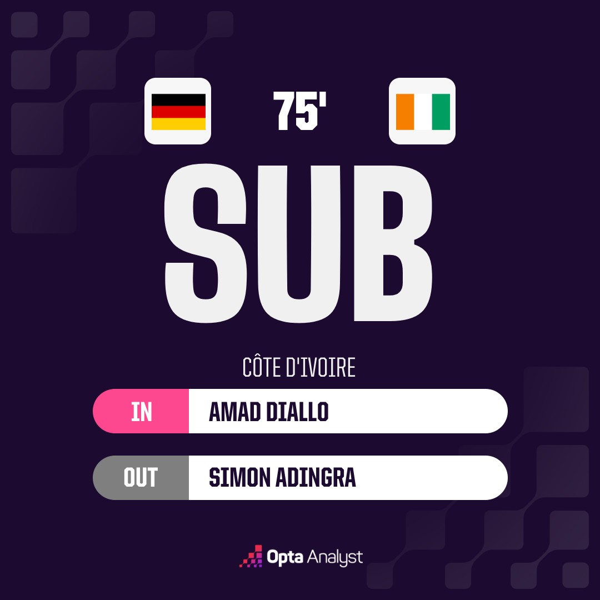
75'
Côte d'Ivoire are making a tactical change. Ibrahim Sangaré is leaving the field and in their place comes Seko Fofana – we will soon see if this switch has the desired impact.
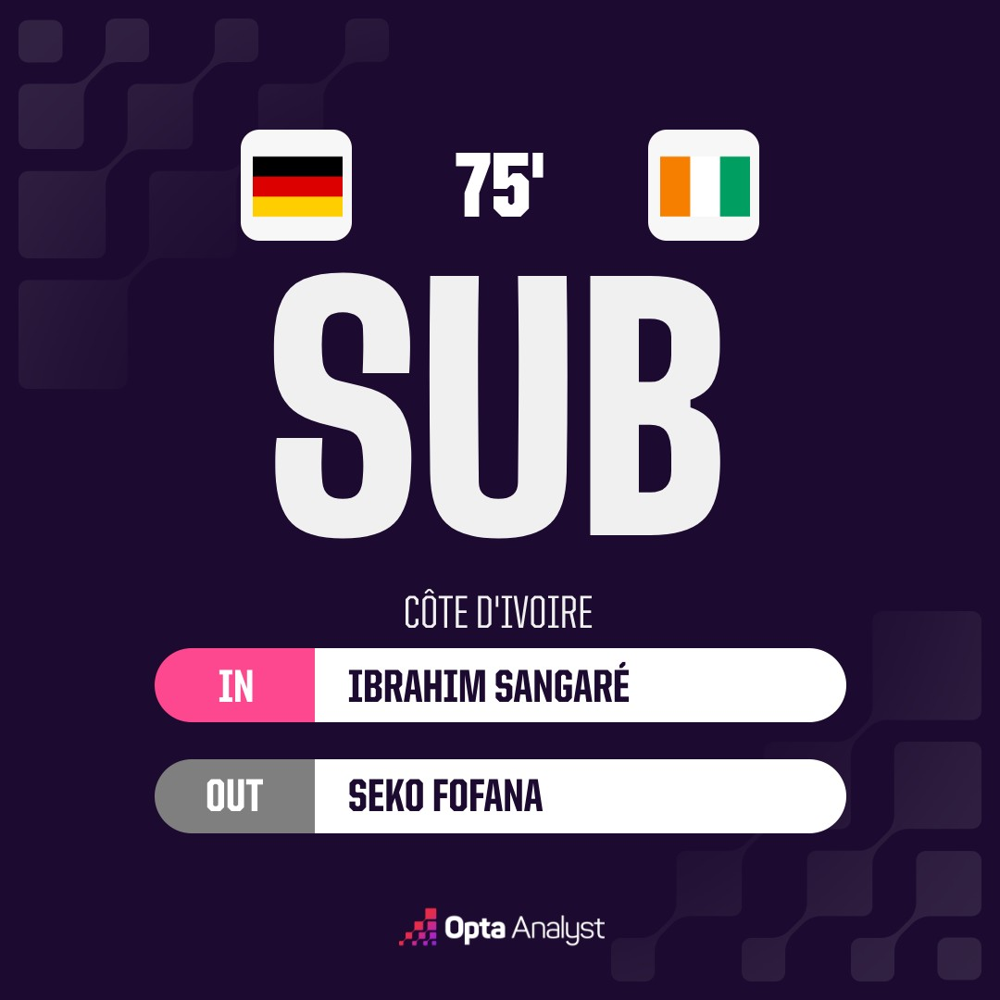
75'
The Côte d'Ivoire manager is looking to the substitutes’ bench, bringing on Evann Guessand in place of Ange Bonny. Will the change make a difference? Let’s find out!
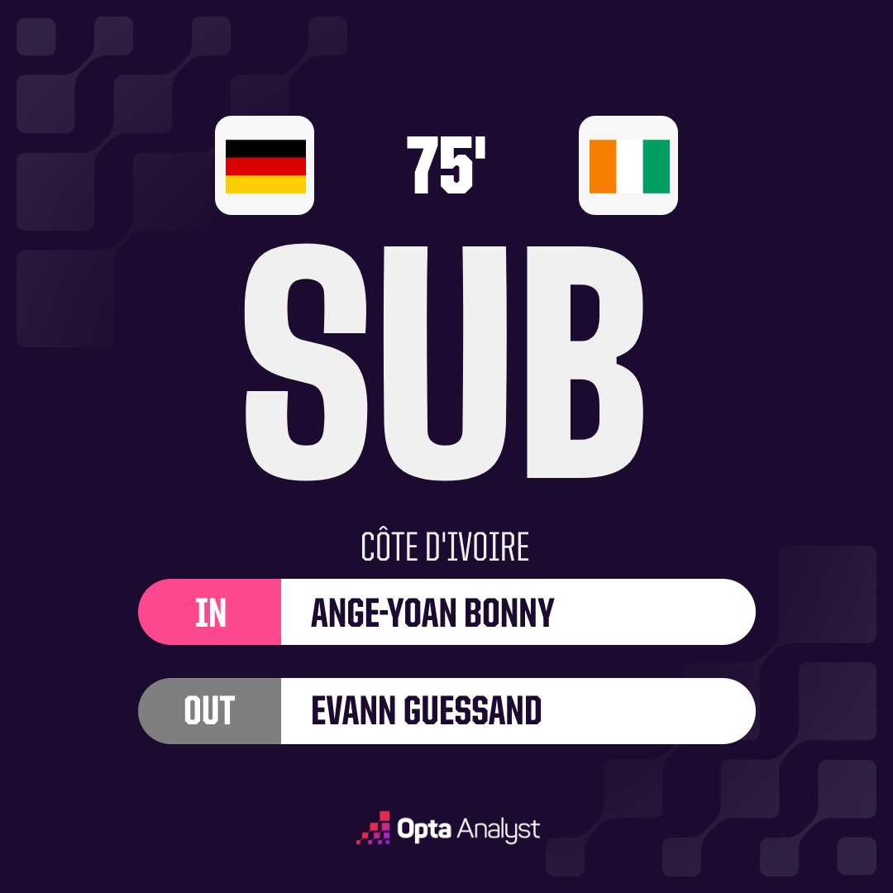
68'
Deniz Undav has scored his second goal in the 2026 FIFA World Cup.
68'
Nadiem Amiri has assisted his first goal in the 2026 FIFA World Cup.
68'
We are level! It’s all square after Deniz Undav finishes from inside the area. It’s Germany 1-1 Côte d'Ivoire – will either team go onto win it now? It’s all to play for in the final stages.
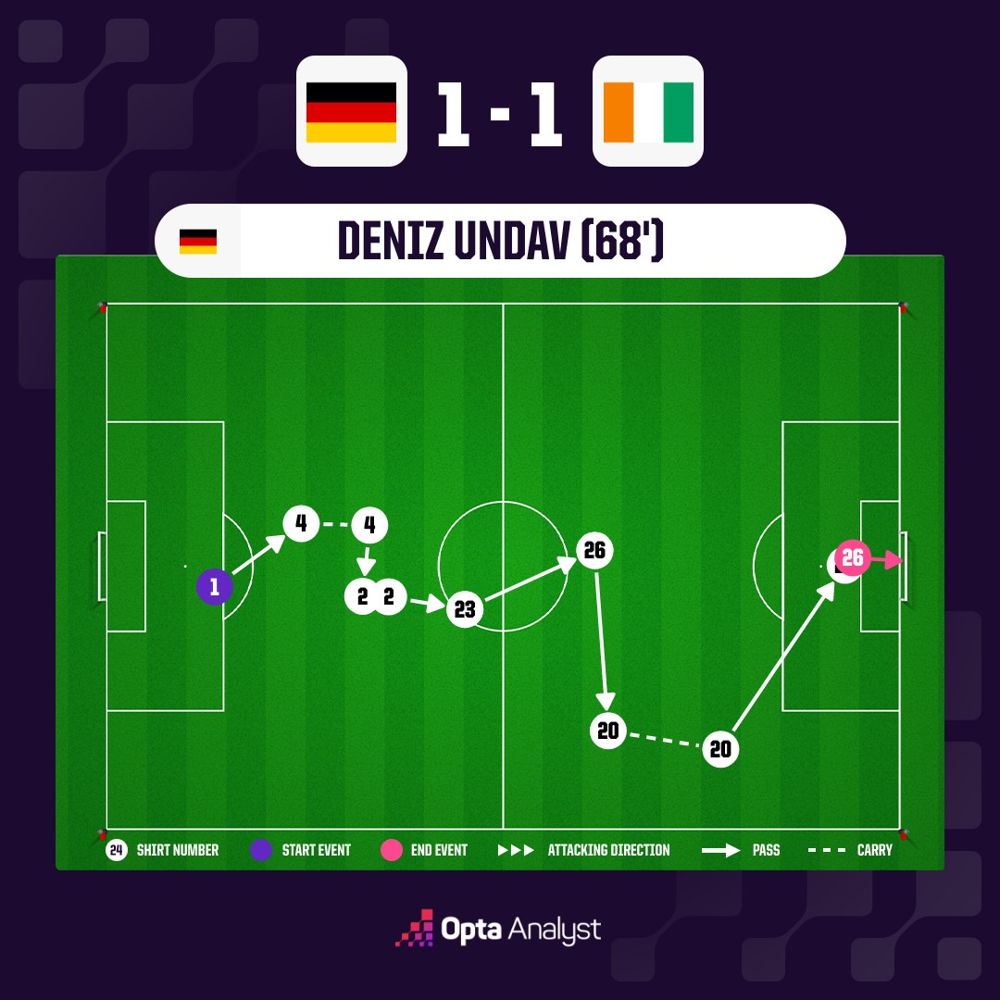
67'
A rash challenge from Deniz Undav, who sends Yahia Fofana tumbling, giving Côte d'Ivoire a free-kick. It is not in a threatening position, but it gives them a chance to get back on the ball.
66'
This match is into the last 25 minutes now, and before it goes into the final stages, let’s check on the shots. There have been 19 in total – 11 from Germany, and 8 from Côte d'Ivoire. Of those attempts, 4 have hit the target – 2 from Germany and 2 from Côte d'Ivoire.
65'
Plenty of the ball in the last quarter-of-an-hour of this match for Germany, but still Côte d'Ivoire stand firm, despite having had only 34.29% of the ball in that period. Can Germany make their possessional dominance count?
63'
MISS! How has that not gone in? A complete lack of composure shown from Kai Havertz, who squanders a golden chance for Germany, whose coach looks on frustrated from the touchline. A real let off for Côte d'Ivoire!
63'
A chance now for Germany to get a good delivery into the box, after the ball is diverted behind for a corner. Germany have been pushing for what would be a key goal, but Côte d'Ivoire have stood firm so far.
63'
It’s backs to the wall now — Côte d'Ivoire throwing everything into defending their advantage, with a flurry of crucial interventions.
61'
MISS! The score remains 0-1, with Côte d'Ivoire relieved after Germany’s Jamie Leweling goes for goal but sends their attempt off target. Not one to write home about, that one.
60'
Aleksandar Pavlović’s match is over as Germany decide to make a substitution. Nadiem Amiri enters the field in what looks like a tactical change.
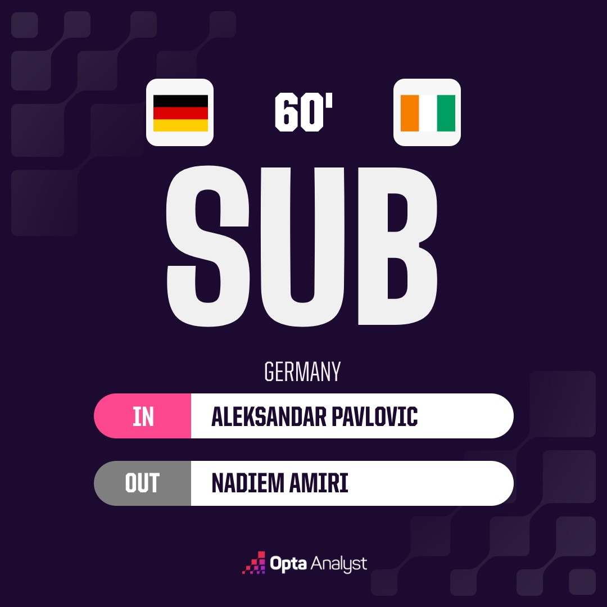
60'
Jamal Musiala’s match is over as Germany decide to make a substitution. Deniz Undav enters the field in what looks like a tactical change.
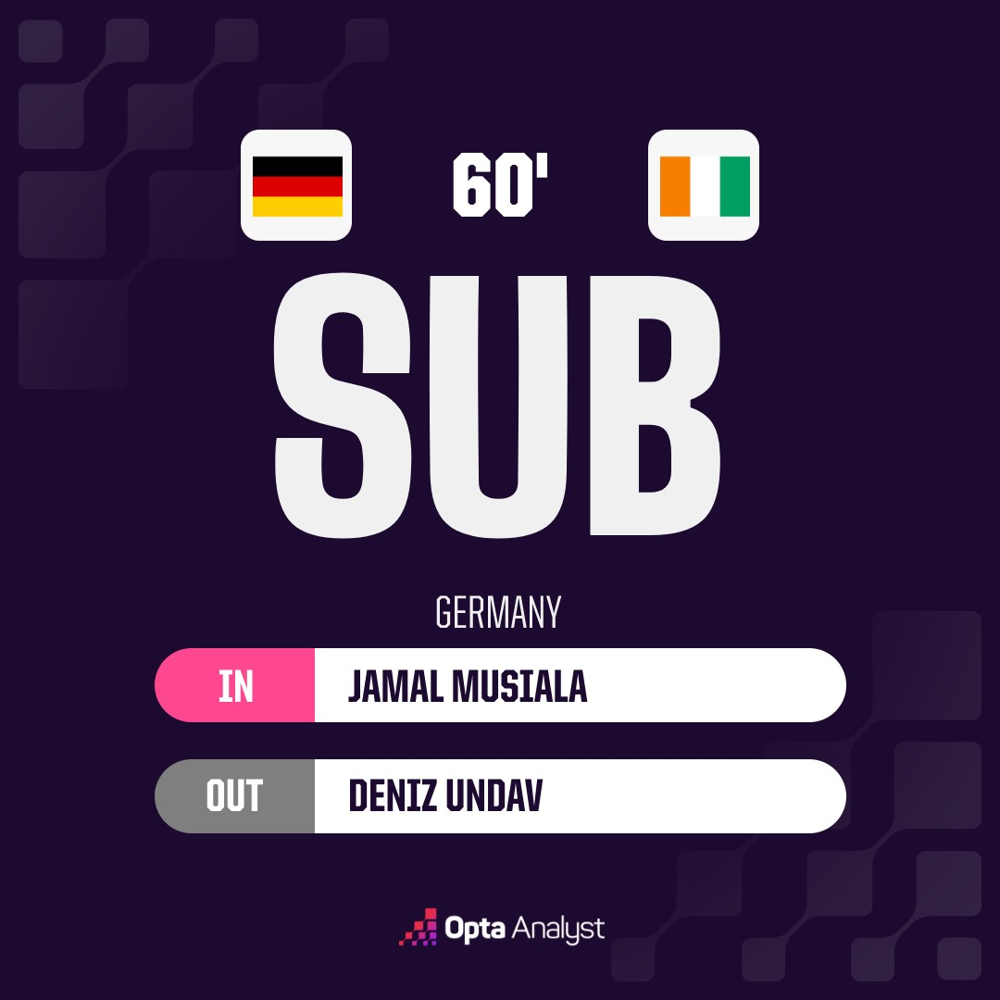
60'
Substitution! Jamie Leweling replaces Leroy Sané for Germany as the manager shuffles the pack. Can Jamie Leweling make an impression as this match continues?
59'
A barrage of deliveries from Germany, who are pushing hard to force the equaliser.
58'
A free-kick to Germany, as Ange Bonny goes in and fouls Jonathan Tah. However, Côte d'Ivoire will not mind giving one away in this area too much, with plenty of distance to their goal.
57'
That is a disappointing effort from Antonio Rüdiger, who went for glory but got their attempt wrong, and the shot sailed off target. A frustrating moment for Germany.
57'
Great defending from Côte d'Ivoire, who are staying organised and winning key battles to preserve their lead.
56'
That is a disappointing effort from Yan Diomande, who went for glory but got their attempt wrong, and the shot sailed off target. A frustrating moment for Côte d'Ivoire.
55'
A rash challenge from Yan Diomande, who sends Aleksandar Pavlović tumbling, giving Germany a free-kick. It is not in a threatening position, but it gives them a chance to get back on the ball.
51'
No luck! Christ Inao Oulaï takes on a shot that, had they got it right, might have been set to test the goalkeeper, but instead it is sent off target and Germany come away unscathed.
50'
BLOCKED! That was close. Franck Kessie got off a shot, which was heading in, but Jonathan Tah was on hand to make a vital intervention. Great block!
46'
Shot blocked! Ghislain Konan unleashes an attempt at goal, but the ball does not reach its target thanks to Antonio Rüdiger, who makes a solid block to stem the danger – for now.
46'
An enforced substitution for Germany, as Nico Schlotterbeck cannot carry on after sustaining an injury. Antonio Rüdiger has hastily warmed up and now made their way onto the pitch in Nico Schlotterbeck's place.
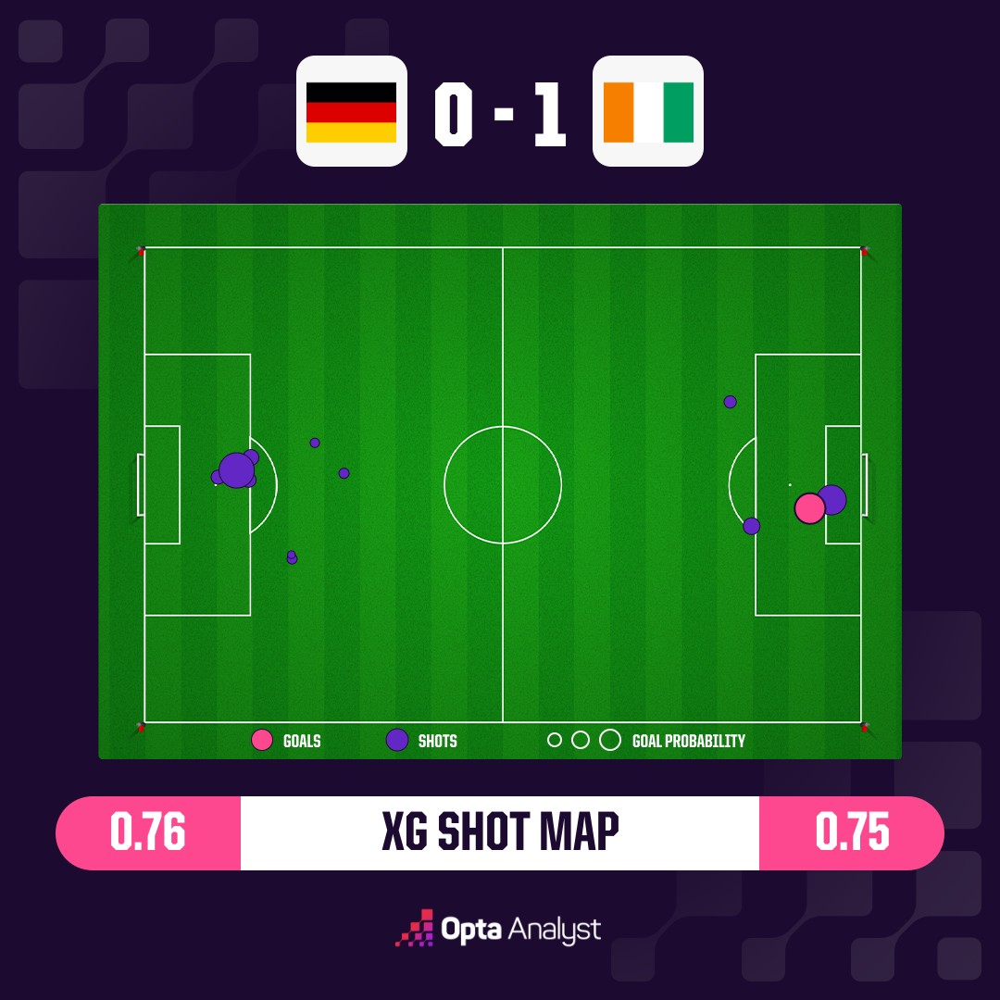
45+8'
Half-time! The referee blows the whistle and it is time for the interval. As we reach the break it is Germany 0-1 Côte d'Ivoire at Toronto Stadium.
45+7'
What a miss! That was a huge chance for Florian Wirtz, but they have failed to convert. What an opportunity that was for Germany.
45+6'
Excellent defensive work from Côte d'Ivoire; their organization and success in key duels are effectively safeguarding their lead.
45+4'
Despite trailing, Germany are showing real defensive grit, digging in and stopping further damage as they try to build a platform.
45+3'
Plenty of the ball in the last quarter-of-an-hour of this match for Germany, but still Côte d'Ivoire stand firm, despite having had only 33.84% of the ball in that period. Can Germany make their possessional dominance count?
45+2'
BLOCKED! That was close. Felix Nmecha got off a shot, which was heading in, but Odilon Kossounou was on hand to make a vital intervention. Great block!
45+1'
Excellent defensive work from Côte d'Ivoire; their organization and success in key duels are effectively safeguarding their lead.
43'
A smooth passage of play from Côte d'Ivoire, who look well on top as half-time approaches.
42'
BLOCKED! That was close. Jamal Musiala got off a shot, which was heading in, but Christ Inao Oulaï was on hand to make a vital intervention. Great block!
41'
Shot blocked! Florian Wirtz unleashes an attempt at goal, but the ball does not reach its target thanks to Ghislain Konan, who makes a solid block to stem the danger – for now.
41'
Excellent defensive work from Côte d'Ivoire; their organization and success in key duels are effectively safeguarding their lead.
40'
Good play from Jamal Musiala, who draws a foul from Franck Kessie to hand Germany a free-kick in a dangerous position. Will they create something from this set-piece?
39'
A free-kick to Côte d'Ivoire, as Jamal Musiala goes in and fouls Odilon Kossounou. However, Germany will not mind giving one away in this area too much, with plenty of distance to their goal.
38'
Manuel Neuer is called into action to keep out a shot from outside the box by Ange Bonny. The effort from the Côte d'Ivoire player was on target, but Germany shot-stopper got to it.
30'
Franck Kessie has scored his first goal in the 2026 FIFA World Cup.
30'
GOAL! Côte d'Ivoire have scored and it is Franck Kessie who has put them in the lead! Franck Kessie applies the finish and while that is not game over for Germany, they have plenty of work to do now! We will see if that strike proves to be the winner!
30'
MISSED! That is really poor from Amad Diallo, who fails to convert from a golden opportunity, with the goal gaping. Will Côte d'Ivoire pay for their profligacy, or can they put that miss behind them?
23'
There is plenty of possession for Germany, with 67.53% compared to Côte d'Ivoire 32.47 % in the last 15 minutes. However, Germany have not been able to turn that dominance of the ball into a goal.
21'
A rash challenge from Aleksandar Pavlović, who sends Yahia Fofana tumbling, giving Côte d'Ivoire a free-kick. It is not in a threatening position, but it gives them a chance to get back on the ball.
21'
Corner now for Germany, as they see a shot from Felix Nmecha deflected out of play for a set-piece. Côte d'Ivoire have some defending to do, here. Could this result in a big opportunity?
18'
That is a disappointing effort from Jamal Musiala, who went for glory but got their attempt wrong, and the shot sailed off target. A frustrating moment for Germany.
12'
BLOCKED! That was close. Wilfried Singo got off a shot, which was heading in, but Nathaniel Brown was on hand to make a vital intervention. Great block!
11'
Free-kick! A foul from Wilfried Singo on Jamal Musiala. It is well away from Côte d'Ivoire’s goal, so it is unlikely to result in a chance for Germany.
10'
MISSED! That is really poor from Kai Havertz, who fails to convert from a golden opportunity, with the goal gaping. Will Germany pay for their profligacy, or can they put that miss behind them?
7'
It’s been tight so far, and Germany are making sure it stays that way with strong defensive discipline and well-timed clearances.
4'
The Germany defence steps up in time and there is a frustration for Franck Kessie, who thought they were through until the flag goes up to signal offside.
1'
MISS! The score remains 0-0, with Côte d'Ivoire relieved after Germany’s Kai Havertz goes for goal but sends their attempt off target. Not one to write home about, that one.
1'
Up and running! Germany have kicked off and this FIFA World Cup match is now under way at Toronto Stadium. Let’s hope for an intriguing battle on the pitch.
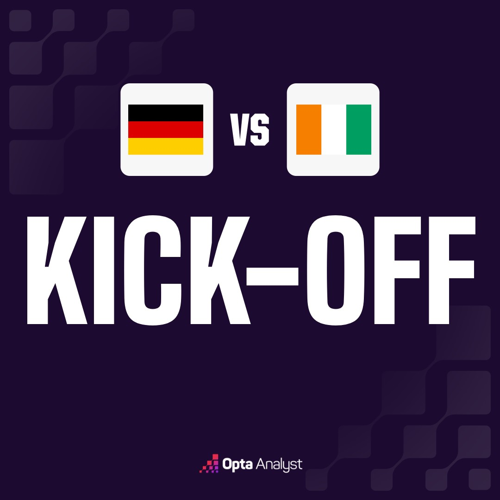
Manuel Neuer is making his 21st appearance in the FIFA World Cup.
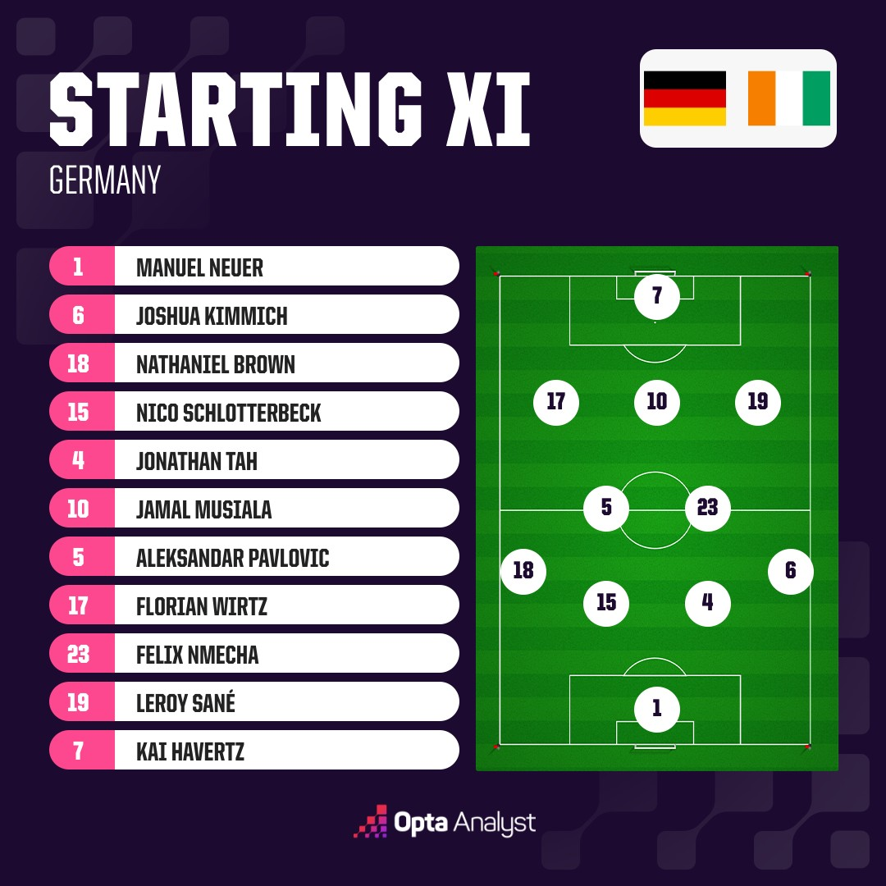
Germany have won their last 6 matches in a row
There have been 3 or more goals scored in total in each of Germany's last 4 home games
Germany have outscored their opponents in both halves in each of their last 2 games
Germany face Côte d'Ivoire on Saturday at Toronto Stadium in a clash of teams who are yet to drop points early in the FIFA World Cup group stage.
Germany's opening World Cup group stage match saw them triumph 7-1 over Curaçao on June 14. Kai Havertz netted a brace to lead the scoring. They have 10 consecutive wins in all competitions.
Côte d'Ivoire won their opening World Cup group stage game on June 14, beating Ecuador 1-0 at Philadelphia Stadium, their fourth consecutive victory. Amad Diallo was the sole player on the scoresheet in the win. In 2026, they have won five and lost one.
Germany and Côte d'Ivoire are first and second in the group, respectively, level on three points. Meanwhile, Ecuador are sitting third on zero points. Curaçao are fourth on zero points.
The clubs played out a 2-2 draw in their last encounter in November 2009.
Havertz has the early World Cup scoring lead for Germany after netting two goals against Curaçao. With a goal against Ecuador, Diallo is the early leading World Cup scorer for Côte d'Ivoire.
Both clubs have been difficult to stop in attack recently, as each have been on the scoresheet in their last 10 games in all competitions.
Germany have won each of their last six matches in all competitions. The German side scored 25 and conceded six in that period, scoring first in five of the six contests. They had 12 first-half goals, while their opponents netted four times in the first 45 minutes. Côte d'Ivoire have won five and lost one in their last six. The Ivorian side scored 13 and conceded four in that period, netting first in four of the six. They had six goals in the first half, while their opponents netted three times before the break.
-
General
Possession 59.5% 59.46940.53140.5% Possession lost in defensive half 17 173333 Possession lost in middle third 47 475252 Duels 104 104103103 Duels success rate 46.2% 46.15452.42752.4% Aerial duels 20 202020 Aerial duels won 50.0% 505050.0% Successful dribbles 6 62020 Fouls won 7 755 Offsides 0 011 Corner awarded 8 833 -
Distribution
Passes 624 624431431 Long passes 31 315757 Long passes proportion (%) 5.0% 4.96813.22513.2% Passing accuracy 88.9% 88.94285.15185.2% Passes in opponents' half 408 408202202 Passing accuracy in opponents' half (%) 86.8% 86.76579.20879.2% Total passes in the final third 221 2219494 Passing accuracy in final third (%) 79.6% 79.63872.3472.3% Forward passes 374 374265265 Forward passes (%) 59.9% 59.93661.48561.5% Through balls 3 311 Final third entries 79 793737 Penalty area entries 44 441515 Total open play crosses 16 1666 Crosses 21 2199 Crossing accuracy 23.8% 23.8155.55655.6% -
Attack
Goals 2 211 Shots 16 1699 Shots on target 7 722 Blocked shots 4 455 Headed shots 2 200 Shots outside the box 7 733 Shots inside the box 9 966 Shots accuracy excluding blocked shots 58.3% 58.3335050.0% Shooting accuracy 43.8% 43.7522.22222.2% Key Passes 14 1466 -
Defence
Tackles 26 262020 Tackles success rate 65.4% 65.3855555.0% Clearances 14 142626 Interceptions 8 81313 Recoveries 51 515555 Attacking third recovery 6 622 Defensive third recovery 25 253737 Midfield third recovery 20 201616 Recoveries in attacking half (%) 11.8% 11.7653.6363.6% -
Discipline
Fouls conceded 5 577 Yellow cards 0 000 Red cards 0 000